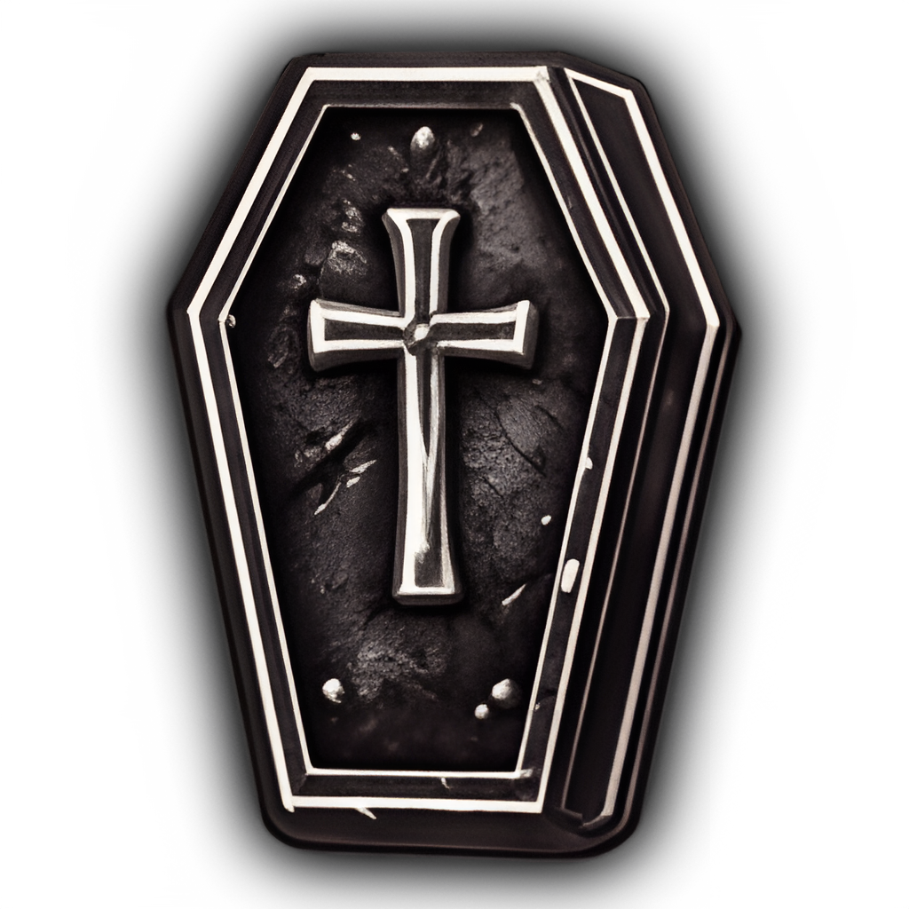

Lore de la serie
Jugadores son enviados a un granja lejos de sus paises causa de la gran guerra pero esa granja no es normal y al caer la noche unos monstruos aparecen para sobrevivir deberan esconderse y no hacer ruido de lo contrario termianaran muriendo.
Todos pueden participar